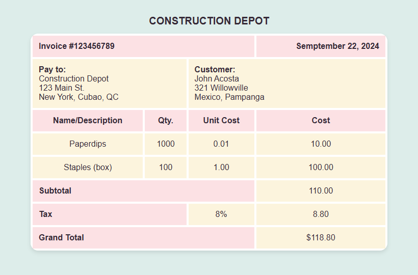
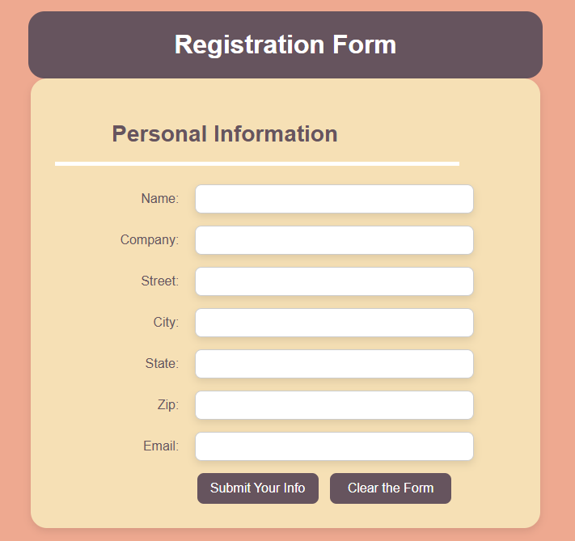
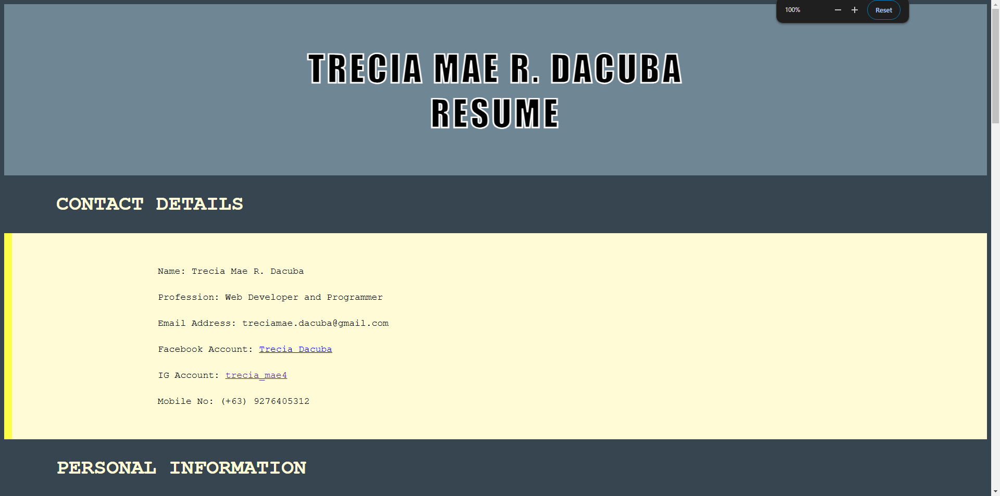

About This Page
Welcome to my Project Page! Here, I showcase my work and progress in Introduction to Computing, highlighting the concepts, skills, and projects I've developed as an IT student. Explore my journey into the world of technology!
Explore My Projects

"Tables" Project
This project demonstrates the use of HTML and CSS in creating tables. Being knowledgeable on using "table" property or HTML tables.

"Registration Form" Project
This project utilizes the use of "form" property in creating registration forms. Using HTML and CSS helped build this project to be more creative and an engaing one.

"Resume" Projects
This project showcases a personal resume made using HTML and CSS styling. This project was one of my first projects in Introduction to Computing.